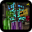
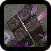
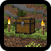
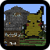
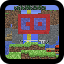
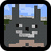
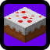

This is where you will find everything you need to know about the private Minecraft server.
Connecting to the server means you comply with all of its terms of service.
Connection Information
Host IP: rainbowdashed.mooo.com
Ports: 25565(main) and 25575(secondary)
Old Server Downloads
Winter 2015 Direwolf20 1.7.10 Server - Ryan had a train and Conor did frickin' Bees.. What a waste.
Download via Mega Showcase Images

Fall 2014 Direwolf20 1.7.10 Server - The one with Conor's huge hands that he built after abandoning Bradley.
Download via Mega
August 2014 Agrarian Skies Server - Oh my Jesus the lag got really bad after a while. Blame the pipes... And the mob spawners... Download via MediaFire -
Mega

Summer 2014 Sup3rp4ck Server - The map with only magic and dungeon based mods, plus one UFO courtesy of Conor. Download via MediaFire Showcase Video

Spring 2014 Scatter Server - Players started at a spawn house that teleported them to a random location. Download via MediaFire

Summer 2013 Summer Server - The server that started it all! A rare piece of history that made its mark in time. Download via Mega Showcase Video

Winter 2010 0.31 Server - On the depths of Ryan's Hardrive, in the pits of backups of backups, lies this relic of the past. Hope you got the HDD space because it's HUGE!! Download via Mega

The Building Game - A shameless ripoff of SethBling's game of the same name, however this supports variable players! Download via Mega

Conor's Cake Factory - A copy of the 2013 Summer Server just before the use of Conor's adventure house, "The Cake Factory". Download via Mega